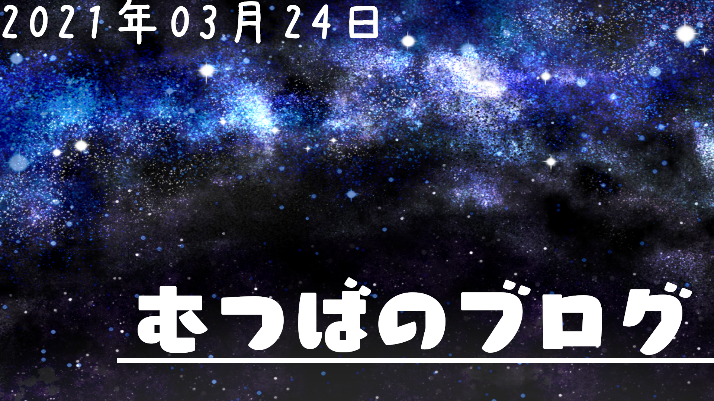

むつばのブログ 『制作時の感想』
おはこんばんにちは！！
今回は新しくなったサイトの制作時に思ったこととかいろいろかきたいとおもいます。
大まかなページごとに分けて話したりしようと思っていますので、つまらないと思うけど見て行ってください！
・始めた理由
まずは....
最初になぜこれを始めたのかという経緯について話そうかと思います。
せっかく一生懸命作ったり、色々前回よりも進化したところがあるので、
記録と見てほしいっていうことで始めてみました！
今後超不定期で更新したり色々書いていけたらいいかなと思ってます！
・全体
今回は、レイアウトを統一感を出すために題名の下に背景と同じ色の下線を引いたり、
全部同じフォントで同じ大きさで描くということをしていました！
今回は色々なチャレンジをして、上のトップ名の所の画像2枚を使ってランダムで表示されるように、
Googleフォームを使ってアンケートサイトを作成...等
結構色んな事をしてみましたのでじっくり見て行って下さるとうれしいです！
・トップページ
「ようこそ」というまずサイトに訪れた人がまず最初にみる場所にジワーって出てくる演出を入れました。
あと、入れてみたかった念願のスクロール誘導の▽が動く奴も調べて入れたので、良い出来ですごい良かったです。
パソコンで見ている人はマウスカーソルを合わせた時にゆっくり色がついてくようにしました！
スマホの人は元々色がついてます！
その色と背景の色が一緒っていうことは気付いたのかな？？
今回綺麗に１つの枠と１つの枠の間が揃っているんですけど、flexというので揃えました！
グリッドだったか忘れたけどその方法もあるっぽいけどその方法は止めましたね
・自己紹介
凄い狭い幅で前回色々書いてましたけども、今回は広い幅でアイコンも丸ではなくてそのまま使用しました
丸にするのがめんどくさいわけではないけど綺麗に丸にならないから採用しませんでした。
自己紹介はそこまで変わってないけども、実績・ゲームのフレコを追加した！
・コピーライト
色々追加しました！(雑いけど見て)
・配布プラグイン
Fireworksプラグインのページを書きました！
今後配布するプラグインが増えれば増えていくかも....？
何を作るとかそういうのは一切考えてないから、わからないですけども((
このサイトの更新と合わせて宣伝画像的な物全部変更してみました。
水色を基調とした画像にしましたけどどうでしたか？
・スペシャルサンクス
前バージョン同様、協力者の掲載です。
Twitterのアイコンと同じ画像を使わせてもらいました！
これで画像をダウンロードする手間を省けた感じだな！